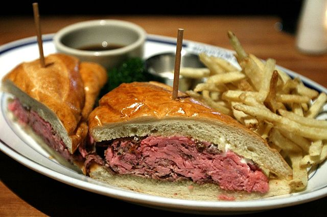

French Dip Sandwich

Description
A French dip sandwich that is quick and easy and the whole family will love.
Ingredients
- 4 hoagie rolls, split lengthwise
- 1 can beef consume
- 1 cup water
- 1 pound thinly sliced deli roast beef
- 8 slices prvolone cheese
Steps
- Preheat the oven to 350 degrees F (175 degrees C). Open hoagie rolls and lay them out on a baking sheet.
- Heat beef consommé and water in a medium saucepan over medium-high heat to make a rich beef broth. Place roast beef in broth and warm for 3 minutes. Arrange meat on hoagie rolls and top each roll with 2 slices of provolone.
- Bake sandwiches in the preheated oven until cheese melts, about 5 minutes. Serve sandwiches with small bowls of warm broth for dipping.